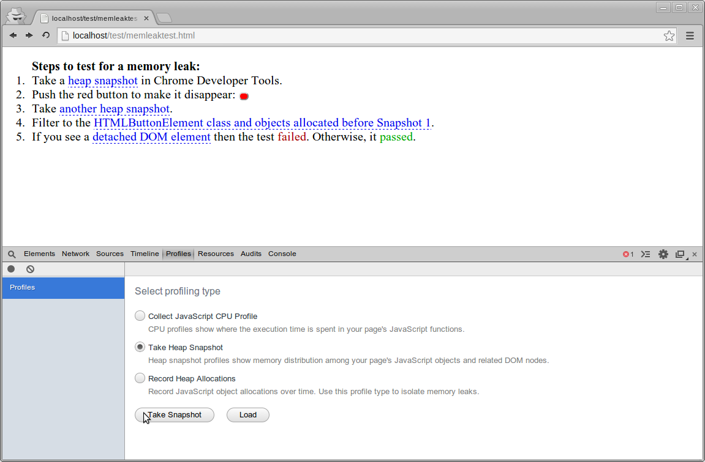
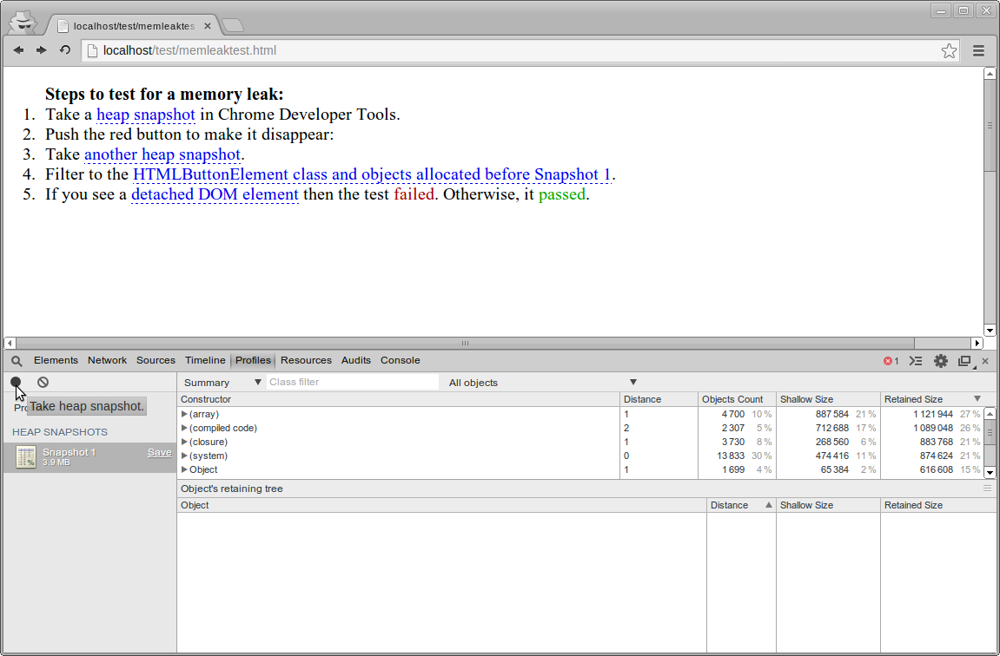
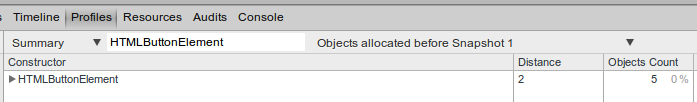
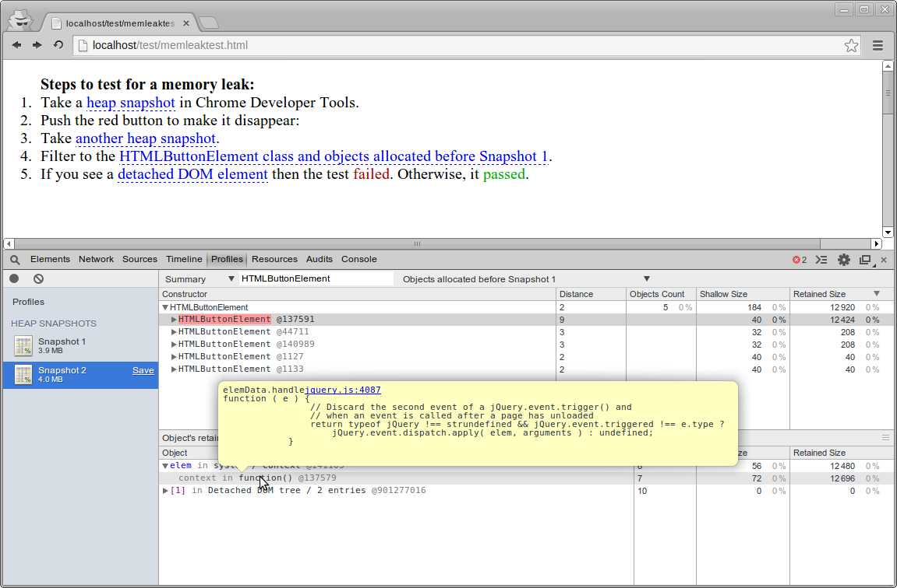

Steps to test for a memory leak:
- Take a heap snapshot in Chrome Developer Tools.
- Push the red button to make it disappear:
- Take another heap snapshot.
- Filter to the HTMLButtonElement class and
objects allocated before Snapshot 1.
- If you see a detached DOM element
then the test failed.
Otherwise, it passed.